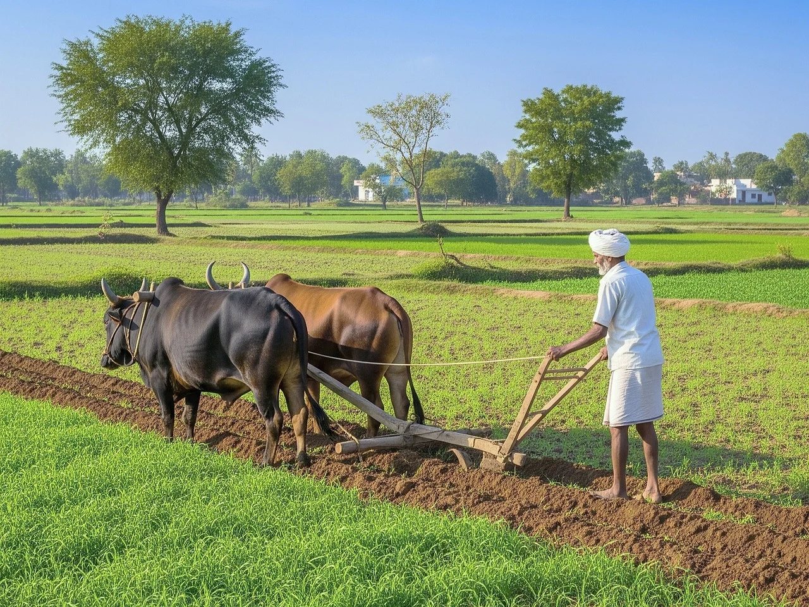
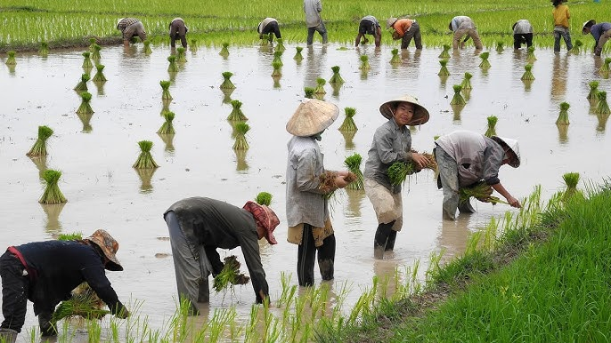

Why Agriculture Matters
Empowering Farmers Through Technology

Experienced Farmers

Smart Farming Practices

Better Harvest Outcomes
Food Security
Agriculture feeds billions of people around the world every day.
Economic Growth
Farming supports millions of families and contributes significantly to economies.
Sustainable Future
Smart farming improves yield while conserving natural resources.